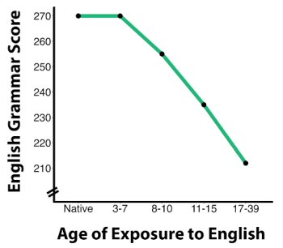

7.5: Sensitive and Critical Periods of Development
Life experiences impact brain development and subsequent behavior. Sensitive and critical periods are developmental periods that are especially pertinent in shaping neural and behavioral outcomes. Sensitive periods refer to developmental time windows during which experiences have an especially strong impact on brain organization. While similar experiences can still affect the brain outside of these sensitive periods, the consequences for brain reorganization will not be as strong. Critical periods refer to the limited time windows during which experiences, or lack thereof, have lasting effects on brain function and behavior (Knudsen, 2004). Disruptions during critical periods due to atypical experiences or adversity may lead to irreversible changes to brain structure. Sensitive and critical periods both involve heightened neuroplasticity. Sensitive periods offer broad windows for experience to shape neural circuitry, while critical periods are a subset that can result in irreversible changes to the brain (Knudsen, 2004).
Sensitive Periods of Development
The brain is especially malleable and adaptive to environmental inputs during childhood. Early life experiences profoundly impact how brain networks organize and develop. For example, language acquisition occurs during early childhood. Research shows a close relationship between the age of exposure to a language and proficiency in that language—peak proficiency is far more likely for those exposed to that language in early childhood (Newport et al., 2001). This is especially pertinent for learning a second language. A seminal study examined second language acquisition in native Chinese or Korean speakers who moved to the United States and learned English at different ages (Johnson & Newport, 1989). Results indicated that children who began learning the second language (English) before age 7 were able to reach proficiency akin to native English speakers; children arriving between age 7 and puberty were less proficient; and after puberty, an individual’s second language proficiency is likely to remain low (Figure 5). These findings support a brain-maturation account, such that the ability to learn languages gradually declines and ultimately flattens as the brain matures. Importantly, this is not to say that learning a second language is impossible after brain maturation; but lower neuroplasticity after this sensitive period contributes to slower second language learning. The ability to learn second languages throughout life, albeit more slowly with age, demonstrates that second language acquisition reflects a sensitive rather than critical developmental period. In summary, children may be better equipped to learn a second language during this sensitive period due to the heightened neuroplasticity.

Critical Periods of Development
Early childhood also features critical periods when environmental input irreversibly shapes brain function and structure. Critical periods can be exemplified in sensory development and first language learning. Past experiments with animals have shown that sensory deprivation during infancy (e.g., an animal is deprived of sight or sound) can have lasting and irreversible consequences on their brain development (Hubel & Wiesel, 1970). For instance, animal studies show that depriving one eye of visual input during a critical period permanently impairs vision by reducing cortical neuron responses to that eye (Gordon & Stryker, 1996). In response to such visual deprivation, the brain reorganizes and prioritizes visual input from the non-deprived eye.
The brain’s adaptive nature can also be seen in individuals who are born blind or deaf and as a result may rely on other sensory systems. For example, in humans, the occipital cortex is typically involved in visual perception. In individuals with early blindness (who become blind during the first few years of life), the occipital cortex shifts from processing visual input to other sensory-related information, such as tactile and auditory sensations (Voss, 2013). This adaptive process is known as cross-modal plasticity. Recent research indicates that cross-modal plasticity can persist after sensory function (e.g., vision) is restored, suggesting brain reorganization during critical periods may persist throughout adulthood (Mowad et al., 2020).
Critical periods of development occur for first language acquisition. In the early 1970s, the tragic story of Genie, an adolescent girl who for most of her childhood experienced severe isolation and neglect, caught the world by storm. When discovered, Genie was unable to communicate verbally with language. Researchers studied Genie’s linguistic development over many years and concluded that, despite initial progress in speech and grammar, her language proficiency remained severely impaired (Curtiss, 1974). A more recent study found that children, who lacked language input during the first year of life due to isolation or hearing difficulties, later had severe language-syntax impairments (Friedmann & Rusou, 2015). In sum, the absence of key environmental inputs, especially during critical periods in early childhood, may be particularly detrimental to subsequent brain development.
Adolescence as a sensitive period of development
Adolescence, the phase between childhood and adulthood (often considered ages 10-24), is marked by significant brain and behavioral changes. As a result of the ubiquitous social, cognitive, and emotional changes during adolescence, this stage of development is now widely considered a sensitive period of development.
How does brain development during adolescence shape behavior? Substantial neuroimaging research has shown that the frontal lobes, which include regions of the brain involved in executive function, such as the prefrontal cortex, are late-developing and undergo significant maturation that continues well into adolescence (Fuster et al., 2002; Casey et al., 1997; Giedd, 2004). Parallel to these brain development findings, prior work indicates that adolescence is marked by increased sensation-seeking and risk-taking behaviors (Spear, 2000). Neuroscientists have suggested that adolescent risk-taking may result from underdeveloped self-regulation, heightened sensation-seeking, and an immature executive function system unable to control reward-seeking impulses (Steinberg et al., 2004).
While the propensity for adolescents to take risks is often viewed negatively, it plays a role in adolescent development. Exploration and experimentation during this period are essential for forming personal identity, developing decision-making skills, and fostering independence. By navigating new experiences and challenges, teenagers learn to assess risks, understand consequences, and gradually develop the autonomy needed for adulthood. Some degree of risk-taking behavior in adolescence can contribute positively to cognitive, social, and emotional growth.
Media Attributions
- Grammar Score vs Age © National Library of Medicine is licensed under a CC BY-NC-SA (Attribution NonCommercial ShareAlike) license

Time limited period of development where intrinsic and extrinsic experiences have an especially strong impact on brain development.
A special class of sensitive periods in which the effects of experience have lasting consequences on subsequent brain development. Absence of key experiences may lead to a disrupted course of brain development.
An adaptive process of the brain, such that loss of one sensory modality induces cortical reorganization that leads to enhanced sensory performance in other sensory modalities.